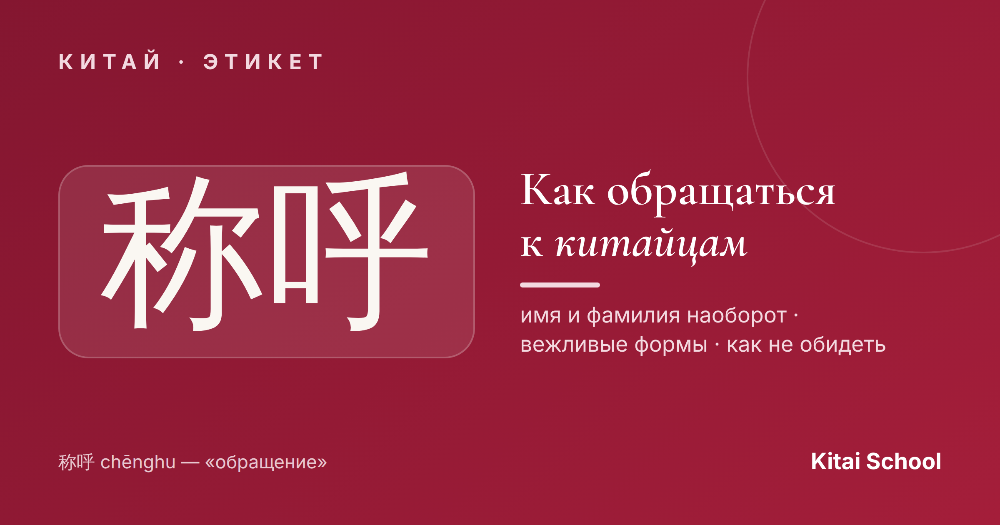
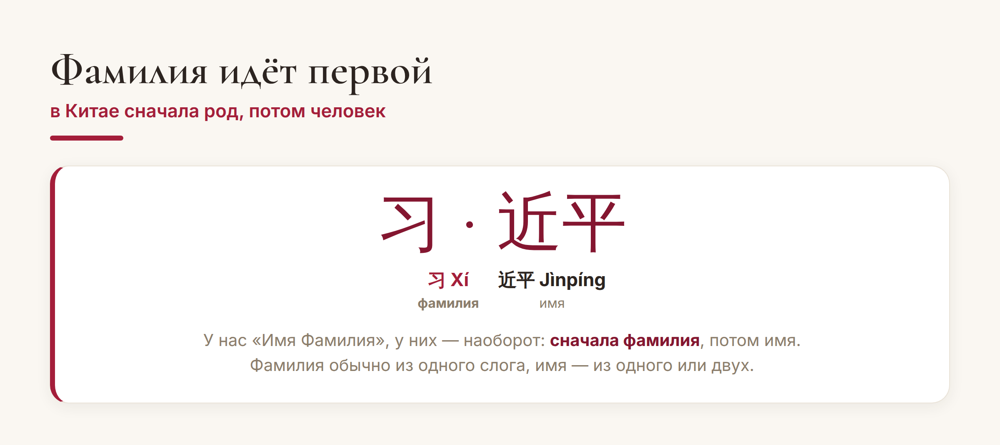
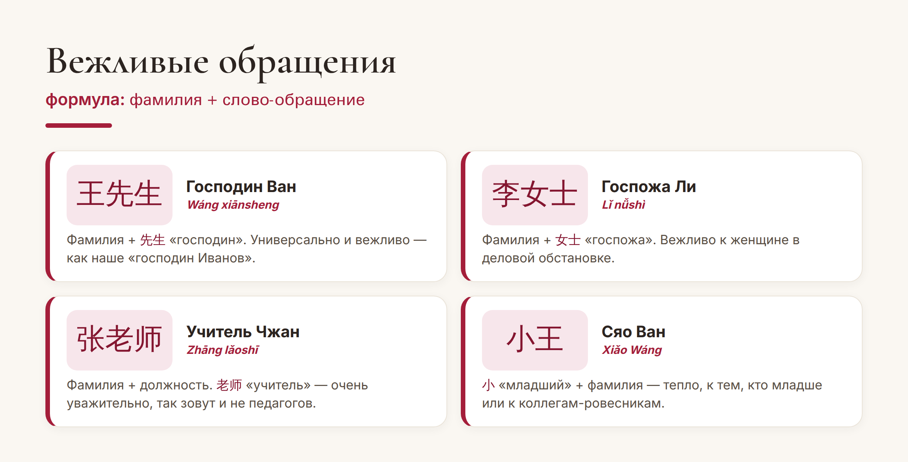

Китай · этикет

Познакомиться с китайцем — и сразу не знать, как его назвать. Имя или фамилия? Что из этого что? А как вежливо? В китайском этикете обращение — 称呼 (chēnghu) — вещь важная: правильно назвать человека значит проявить уважение. Разберёмся по-простому, чтобы вы не растерялись.
Главное, что переворачивает всё с ног на голову: у китайцев фамилия идёт первой. Мы говорим «Иван Петров», а они — «Петров Иван». Поэтому в имени 习近平 (Xí Jìnpíng) фамилия — это 习 (Xí), а имя — 近平 (Jìnpíng).

Фамилия почти всегда состоит из одного слога, а самых распространённых — всего сотня (王 Ван, 李 Ли, 张 Чжан и другие). Имя — из одного или двух слогов, и его родители часто выбирают со смыслом: «умный», «красивый», «сильный».
А вот и главное правило вежливости. К человеку почти никогда не обращаются просто по имени — это слишком фамильярно. Работает формула: фамилия + слово-обращение.

Самое универсальное — 先生 (xiānsheng, «господин») и 女士 (nǚshì, «госпожа»): 王先生 — «господин Ван». Очень уважительно звучит обращение по должности, особенно 老师 (lǎoshī, «учитель») — так называют не только педагогов, но и любого уважаемого человека. А тёплое 小 (xiǎo, «младший») плюс фамилия — 小王 (Сяо Ван) — для друзей и коллег помладше.
Несколько простых правил, чтобы точно никого не задеть:
Не зовите по имени сразу. Пока вас не пригласили («зови меня просто…»), обращайтесь по фамилии с вежливым словом. Обращение только по имени уместно между близкими.
Уважайте возраст и статус. К старшим и начальству — подчёркнуто вежливо (先生, 老师, должность). Возраст в Китае — повод для уважения, а не для стеснения.
Визитку берите двумя руками. При деловом знакомстве карточку принимают и подают обеими руками и с лёгким кивком — это знак почтения.
Совет. Не знаете, как назвать, — спросите: 您怎么称呼？ (nín zěnme chēnghu? — «как к вам обращаться?»). Это вежливо и абсолютно нормально: китайцы оценят, что вам важно назвать их правильно.
Вот и весь этикет обращения: помните, что фамилия впереди, добавляйте к ней вежливое слово — и не переходите на имя раньше времени. Немного внимания к тому, как вы называете человека, — и общение с китайцами станет заметно теплее.
Приятных вам знакомств! 有朋自远方来。